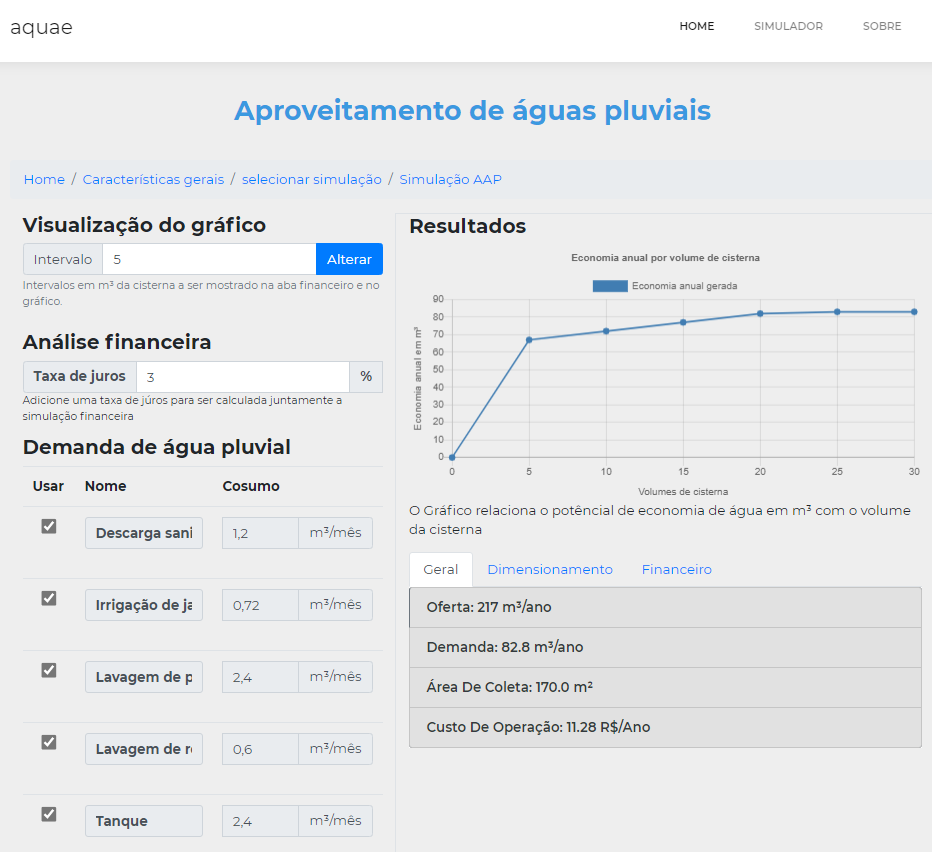
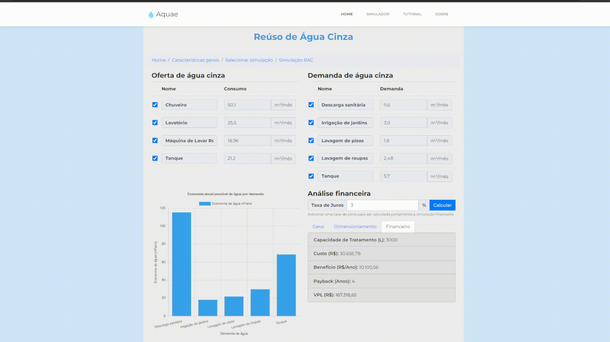
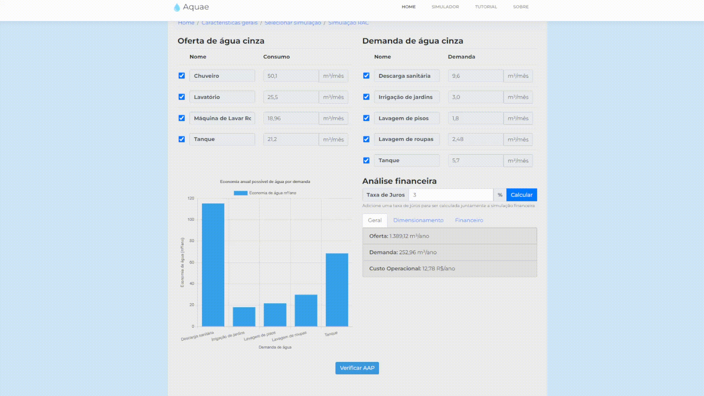

Como utilizar
Para começar a fazer simulações no aquae basta acessar a área de simulação como mostrado na figura abaixo.

Na área da simulação primeiramente selecione o tipo de edificação da sua residência. Logo após isso preencha os campos de acordo com o que eles pedem.

Após ter preenchido os campos solicitados preencha os campos de demandas de água não potáveis, contendo a frequência mensal de uso e o total do uso como indicado no texto ao lado do campo relacionado ao indicador de uso final.

Caso haja algum campo de demanda de água que sua residência não utiliza, sinta-se livre para excluí-lo.

Você também pode adicionar outros tipos de uso de água não potável que não estão listados. Ao fazer isso adicione : o nome do consumo; frequência mensal e a média de litros por dia.

Ao clicar em próximo você será enviado para a página de seleção de simulação podendo escolher entre a Simulação de Aproveitamento de águas pluviais ou de Reúso de Águas Cinzas.

Ao selecionar AAP sua simulação estará pronta em uma nova página como a seguinte. Nela é possível ver duas colunas principais. A primeira coluna permite que você possa alterar pequenos detalhes da simulação como o intervalo de cisternas; taxa de juros e quais demandas de água usar na simulação.
Na segunda coluna é possível visualizar um gráfico relacionando o potencial de economia de água com os possíveis volumes de cisternas. Observe que quanto maior o volume da cisterna, maior é a economia, entretanto essa economia acaba por estagnar a medida que o volume for subindo. Abaixo do gráfico há três abas, Geral, Dimensionamento e Financeiro** que respectivamente mostram: Informações gerais relacionadas a simulação; Dimensionamento de algumas Características do sistema e análise financeira da simulação com base nos volumes de cisterna.
Uma vez na simulação AAP é possível voltar para a página anterior e selecionar RAC, ou clicar no botão Verificar RAC na própria página do AAP.
Aqui o formulário é semelhante ao formulário da edificação, especificamente das demandas de água, contando com campos na mesma disposição (uso, frequência mensal e indicador de uso final) e os mesmos recursos de adicionar campos para ofertas customizadas que não estão listadas, assim como a possibilidade de deletar campos.

Ao clicar em próximo pode-se ver os resultados da simulação.
Na página há uma tabela para as ofertas de água e uma para as demandas de água informadas nos formulários para simulação, nelas é possível desmarcar ou remarcar as demandas e ofertas que devem ou não ser utilizadas na simulação.

Também há um gráfico de barras para ilustrar as demandas (em m³/ano ) que podem ser atendidas individualmente dependendo das ofertas e demandas que permanecem marcadas nas tabelas, evidenciado no GIF anterior.
Além dos recursos já citados, há uma parte dedidicada para análise financeira e outras características do sistema, contendo um campo que permite o recalculo da taxa de juros e 3 tabelas (Geral, Dimensionamento e Financeiro), evidenciadas no GIF que se segue. 